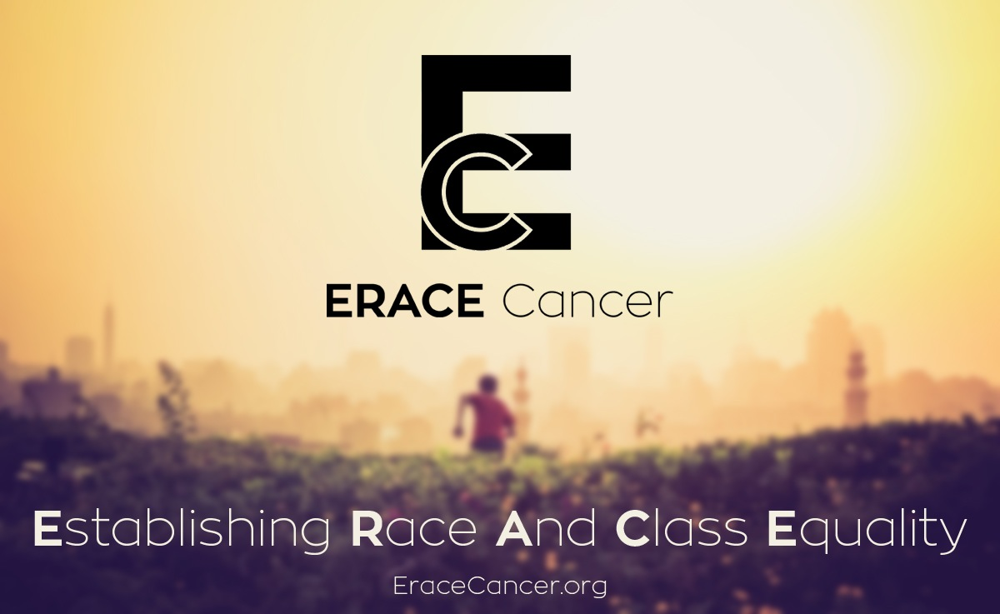

Stanford Free Oral Cancer Screening
Oct. 4th from 8AM to 12 NOON at 801 Blake Wilbur, 3rd Floor Clinic

Oct. 4th from 8AM to 12 NOON at 801 Blake Wilbur, 3rd Floor Clinic

Over 30% of cancer deaths are due to five behavioral and dietary risks: high body mass index (BMI), low fruit and vegetable intake, lack of physical activity, tobacco use, and alcohol use. Tobacco alone is estimated to be the leading cause of over 20% of global cancer deaths and about 70% of global lung cancer deaths. Other environmental factors that are strongly correlated with cancer incidence are...
In Santa Clara County, the incidence and mortality rates of all cancer types are higher that state averages. Not only are rates above state averages, but the rates are disproportionately high when subdivided by race and ethnicity. Cancer screening rates were also well below the Health People (HP) targets with cervical cancer 20 percentage points below the HP target and...

Addressing a crowded room at the national convention of the Medical Committee for Human Rights in a Chicago hotel in 1966, Dr. Martin Luther King Jr. declared discriminatory health policy uniquely offensive: “Of all the forms of inequality, injustice in healthcare is the most shocking and inhuman.” Almost fifty years later, the health care system of the United States remains a model of injustice...
For the third consecutive year, Stanford Health Care's Ear Nose and Throat Clinic will offer a free screening for oral cancer. Every year in the United States, over 40,000 people are diagnosed with oral cancer. Oral Cancer has a notoriously low survival rate because the disease is often not caught until it has spread to other sites in the body, making it more difficult to treat. The screening is happening on October 4th, from 8am to noon at 801 Welch on the Stanford Campus. For more information or to register for the screening, please call: (650) 308-9990 or email oralhealth@eracecancer.org
There are many ways to contribute to ongoing efforts to expand access to adequate health care and disseminate educational information on cancer screening and prevention. The general member meetings of ERACE Cancer happen weekly, thursday evenings at 5PM in LKSC. We also recommend considering participation in the Stanford Free Clinic programs. If you are interested in conducting clinical research on cancer outcomes, we are currently interviewing for Fall 2014 Research Fellows. Email info@eracecancer.org with any questions
ERACE Cancer is a group of students and researchers working to Establish Race and Class Equality in Cancer. We lead educational initiatives that disseminate information on cancer prevention strategies to the Stanford campus community and at-risk populations in the Bay Area. In addition to outreach efforts, we serve as a forum for discussions on the social determinants of health and the societal factors that shape access to adequate healthcare.